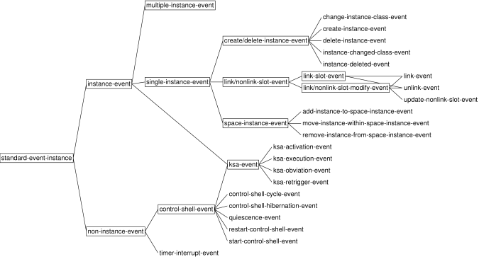

| | | Application Startup and Event Functions | |
In the last exercise, we needed to create the known-worldx and y dimensions, before we started the Agenda
Shell. We also needed to call
tutorial-example.lisp
(in-package :gbbopen-user)
(define-unit-class location ()
(x y)
(:dimensional-values
(x :point x)
(y :point y))
(:initial-space-instances (known-world)))
(defmethod print-instance-slots ((location location) stream)
(call-next-method)
(when (and (slot-boundp location 'x)
(slot-boundp location 'y))
(format stream " (~s ~s)"
(x-of location)
(y-of location))))
;;; ====================================================================
;;; Startup KS
(defun startup-ks-function (ksa)
(declare (ignore ksa))
;; Create an initial location unit instance at (0,0):
(make-instance 'location :x 0 :y 0))
(define-ks startup-ks
:trigger-events ((start-control-shell-event))
:execution-function 'startup-ks-function)
:agenda-shell-user
Edit your tutorial-example.lisp
(defun initializations (event-name &key &allow-other-keys)
(declare (ignore event-name))
;; Clean up any previous run:
(delete-blackboard-repository)
;; Make a new known-world space instance:
(make-space-instance
'(known-world)
:dimensions '((x :ordered) (y :ordered))))
The first thing to note about the function definition is the argument
signature: initializations&key and &allow-other-keys
When initializationsks,
ksa-queueordered-ksa-queueinitializations(known-world)x and y.
GBBopen allows you to attach functions, called event functions, that
are called whenever a specific event is signaled. Each event function must
accept the arguments associated with every event class to which it is
added. In addition, the function should accept additional arguments that are
associated with all subevents of the specified event classes. This is achieved
by specifying &allow-other-keys
Here are GBBopen's defined event classes when the Agenda Shell has
been loaded:

Event classes shown within rectangles are abstract event classes that cannot
be signaled. Nevertheless, abstract event classes are very convenient if we
wish to attach an event function to an entire subtree of event classes. We
used abstract event classes to advantage earlier when we enabled display of
all control-shell events by evaluating:
gbbopen-user> (enable-event-printing '(control-shell-event :plus-subevents)) nil gbbopen-user>or the shorthand equivalent:
gbbopen-user> (enable-event-printing '(control-shell-event +)) nil gbbopen-user>
Add the following form at the end of your tutorial-example.lisp
(add-event-function 'initializations 'start-control-shell-event
;; Initializations should be done first!
:priority 100)
(We'll place the initializations
Start a fresh Common Lisp session, compile and load the
tutorial-example.lispC-c C-kC-c C-b
gbbopen-user> (start-control-shell) ;; Control shell 1 started ;; No executable KSAs remain, exiting control shell ;; Control shell 1 exited: 3 cycles completed ;; Run time: 0 seconds ;; Elapsed time: 0 seconds :quiescence gbbopen-user>
Note that our developing application performs the same as it did in the last
exercise, but now our initializationsknown-world
Let's verify that we can re-run our application. Without doing anything else, start the Agenda Shell again:
gbbopen-user> (start-control-shell) ;; Control shell 1 started ;; No executable KSAs remain, exiting control shell ;; Control shell 1 exited: 3 cycles completed ;; Run time: 0 seconds ;; Elapsed time: 0 seconds :quiescence gbbopen-user>
As before, our initializations
GBBopen allows us to restrict the classes of unit instances that can be stored
on a space instance. For example, we can limit the known-worldlocation:allowed-unit-classes
(defun initializations (event-name &key &allow-other-keys)
(declare (ignore event-name))
;; Clean up any previous run:
(delete-blackboard-repository)
;; Make a new known-world space instance:
(make-space-instance
'(known-world)
:allowed-unit-classes '(location)
:dimensions '((x :ordered) (y :ordered))))
Attempting to add any unit-instance that is not a locationknown-worldIt is often convenient to specify the dimensions of a space-instance relative
to those of one or more unit classes. Edit the definition of
initializationsx and y dimensions
specification:
(defun initializations (event-name &key &allow-other-keys)
(declare (ignore event-name))
;; Clean up any previous run:
(delete-blackboard-repository)
;; Make a new known-world space instance:
(make-space-instance
'(known-world)
:allowed-unit-classes '(location)
:dimensions '((x :ordered) (y :ordered))))
and replacing it with a call of location
(defun initializations (event-name &key &allow-other-keys)
(declare (ignore event-name))
;; Clean up any previous run:
(delete-blackboard-repository)
;; Make a new known-world space instance:
(make-space-instance
'(known-world)
:allowed-unit-classes '(location)
:dimensions (dimensions-of 'location)))
Compile and load the tutorial-example.lispC-c C-kC-c C-b
gbbopen-user> (start-control-shell) ;; Control shell 1 started ;; No executable KSAs remain, exiting control shell ;; Control shell 1 exited: 3 cycles completed ;; Run time: 0 seconds ;; Elapsed time: 0 seconds :quiescence gbbopen-user>
Verify the dimensionality of the known-world
gbbopen-user> (describe-space-instance '(known-world))
Standard-space-instance #<standard-space-instance (known-world)>
Allowed unit classes: t
Dimensions:
(x :ordered)
(y :ordered)
gbbopen-user>
The GBBopen Project
| | | Application Startup and Event Functions | |